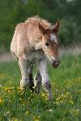
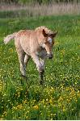
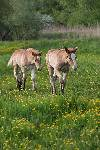
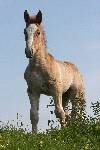
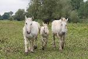
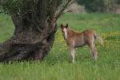
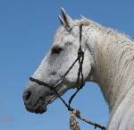

Équidés
Page :
1
2
Suivante







Accueil
Catégories
Passereaux
: (145)
Animaux du marais
: (142)
Plantes et fleurs
: (78)
Graphismes
: (74)
Animaux de compagnie
: (44)
Insectes
: (43)
Cygnes
: (39)
Équidés
: (37)
Nausicaa
: (32)
Hérons
: (27)
Lagomorphes (lapins etc...)
: (22)
Divers
: (18)
Rapaces
: (17)
Paysages
: (9)
Mouettes
: (8)
Nous écrire
Copyright :
Daniel
et
Florian
Quèze - 2005-2010